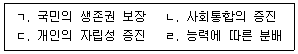
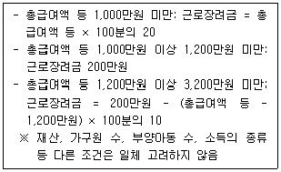
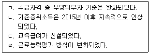
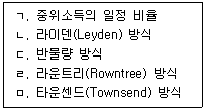

1과목: 사회복지 정책론
1. 1942년 베버리지 보고서에서 규정한 5대 악에 해당되지 않는 것은?
2023-04-19 10:⑤
2. 사회복지정책 평가가 갖는 특징으로 옳지 않은 것은?
2023-04-19 10:09
3. 롤스(J. Rawls)의 정의론(공정으로서의 정의)에 관한 설명으로 옳은 것은?
4. 다음 중 사회복지정책이 필요한 이유를 모두 고른 것은?

2023-04-19 10:06
5. 사회복지정책의 발달이론 중 의회민주주의의 정착과 노동자계급의 조직화된 힘을 강조하는 이론은?
2023-04-19 10:11
6. 영국 구빈제도의 역사에 관한 설명으로 옳지 않은 것은?
2023-04-19 10:10
7. 조지(V. George)와 윌딩(P. Wilding)이 제시한 이념 중 소극적 집합주의에 관한 설명으로 옳은 것은?
8. 에스핑-안데르센(G. Esping-Andersen)의 복지국가 유형에 관한 설명으로 옳지 않은 것은?
9. 우리나라 의료보장제도(국민건강보험, 의료급여)에서 시행하고 있는 것 중 의료비 절감효과와 관련이 가장 적은 것은?
10. 조세특례제한법상의 '총급여액 등'을 기준으로 근로장려금 산정방식을 다음과 같이 설계하였다고 가정할 때, 총급여액 등에 따른 근로장려금 계산 결과로 옳지 않은 것은?

11. 최근 10년간 국민기초생활보장제도의 변화에 관한 설명으로 옳은 것을 모두 고른 것은?

12. 사회보험과 비교하여 공공부조제도의 장점으로 옳은 것은?
13. 우리나라가 시행하고 있는 취약계층 취업지원 제도에 관한 설명으로 옳은 것은?
14. 우리나라 고용보험과 산업재해보상보험에 관한 설명으로 옳은 것은?
15. 다음 중 상대적 빈곤선을 설정(측정)하는 방식으로 옳은 것을 모두 고른 것은?

2023-04-19 10:07